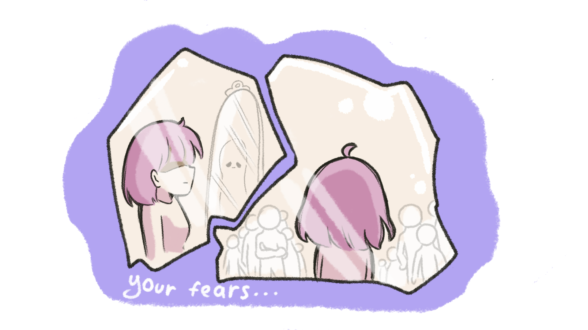

The mirror shifts again, revealing fragmented reflections of possible futures.
Each crack corresponds to a fear, uncertainty, or unfulfilled desire.
As you mend each crack, the reflections begin to merge into a clearer, brighter image of what could be.

Do you feel hopeful about your future as you mend the cracks?
=======
Neuro Narratives
The mirror shifts again, revealing fragmented reflections of possible futures.
Each crack corresponds to a fear, uncertainty, or unfulfilled desire.
As you mend each crack, the reflections begin to merge into a clearer, brighter image of what could be.
Do you feel hopeful about your future as you mend the cracks?